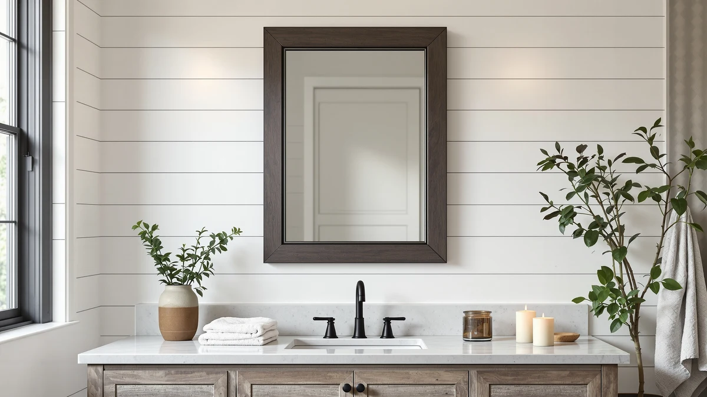

How to Clean Dirty Bathroom Mirrors: Complete Guide (2026)
Prices and picks verified as of October 2026. Independent, reader-supported reviews.


Things to Know Before You Buy
- Hard water spots and hairspray film are the two most common causes of a dirty bathroom mirror, and each responds to a different cleaning approach.
- Spraying cleaner onto a cloth instead of directly onto the glass keeps liquid from dripping behind the mirror's edges, where it can cause dark spots over time.
- A 50/50 mix of white vinegar and distilled water cuts through soap scum and toothpaste residue as well as most store-bought glass cleaners.
- Wiping in straight lines, top to bottom, shows streaks faster than wiping in circles, which makes it easier to catch spots you missed.
- Running the bathroom fan for 10 to 15 minutes after a shower cuts down on the humidity that causes mirrors to fog and spot between cleanings.
How to clean dirty bathroom mirrors comes down to three things: the right cleaning solution, a lint-free cloth, and wiping in one direction instead of circles. Toothpaste flecks, hairspray film, and hard water spots build up fast in a small, humid room, and a quick wipe with a paper towel usually smears them around instead of lifting them off.
This guide walks through a five-step method that gets a foggy, spotted mirror back to a clear, streak-free finish in about 20 minutes, using supplies you likely already have under the sink. It also covers the mistakes that leave mirrors looking worse after cleaning, like spraying glass cleaner directly onto the glass or skipping the edges where grime collects first.
What You'll Need
- Supplies: white vinegar, distilled water, and microfiber cloths
- Tools: a spray bottle and a squeegee
Step 1: Clear and Dust the Mirror First
Before you clean a dirty bathroom mirror, clear everything off the counter below it and set aside anything leaning against the glass, like a toothbrush holder or soap dispenser. Wet cleaner dripping onto clutter creates more mess to deal with afterward.
Next, dust the mirror and its frame with a dry microfiber cloth. This lifts loose hair, lint, and dried toothpaste flakes that would otherwise turn into a paste the moment you add liquid cleaner, smearing the mirror instead of clearing it. Pay attention to the frame's edges and corners, where dust collects and eventually works its way onto the glass.
Step 2: Mix a Vinegar-and-Water Cleaning Solution
Fill a spray bottle with a 50/50 mix of white vinegar and distilled water. The acidity in vinegar breaks down the mineral deposits and soap film that make a bathroom mirror look dull, and distilled water avoids adding new mineral spots from tap water as it dries.
If the mirror only has light dust and fingerprints rather than heavy buildup, a standard ammonia-free glass cleaner works too. Skip anything with added moisturizers or fragrance oils, since those leave a faint film that attracts more dust once it dries.
Step 3: Spray the Cloth, Not the Glass
Spray your cleaning solution onto a clean microfiber cloth rather than the mirror itself. This single change is what separates a streak-free clean from one that leaves drips running down to the frame or seeping behind the mirror's edges, where moisture can cause dark spots on the backing over time.
Wipe the mirror in straight, overlapping lines from top to bottom rather than in circles. Circular wiping tends to push grime around and spreads any missed spots across a wider area, while straight lines make it obvious where you still need to go back over.
Step 4: Buff Out Streaks With a Dry Cloth
Once the mirror is damp-clean, switch to a second, completely dry microfiber cloth and buff the surface in light circular motions. This step removes the thin layer of moisture left behind by the first pass, which is usually where streaks come from, not from the cleaning solution itself.
A squeegee works well here too, especially on larger mirrors. Pull it in slightly overlapping strips from the top corner down, wiping the blade dry between each pass so you are not redistributing the same water across the glass.
Step 5: Dry the Edges and Set Up for Fewer Repeats
Finish by drying the mirror's edges and frame with a dry corner of your cloth. Standing moisture at the edges is what eventually causes the dark, cloudy patches you see on old mirrors, so this last pass matters more than it looks like it would.
Turn on the bathroom fan, or crack a window, for 10 to 15 minutes after your next shower. Lower humidity means less fog and fewer water spots between cleanings, which keeps you from having to repeat this whole process every few days.
Common Mistakes to Avoid
The biggest mistake people make when they clean a dirty bathroom mirror is spraying cleaner straight onto the glass. Liquid runs down to the frame or the bottom edge, seeps behind the mirror's silver backing, and causes the dark spots and peeling you see on older mirrors. Spray the cloth instead, every time.
Using paper towels or old bath towels instead of a microfiber cloth is another common shortcut that backfires. Paper towels shed lint that sticks to a damp mirror, and towel fibers can leave faint scratches on glass over months of use. A couple of microfiber cloths cost less than a bottle of name-brand glass cleaner and last for years.
Skipping the dry-dust step before applying any liquid is also a frequent cause of smearing. Dried toothpaste and hairspray residue turn into a paste the moment they get wet, and wiping that paste around moves the mess rather than removing it. A quick dusting first avoids the problem entirely.
Finally, cleaning only the center of the mirror and ignoring the edges leaves grime right where fog and condensation collect first. Those edges are also where moisture does the most long-term damage, so they need the same attention as the rest of the glass, not less.
Our Top Picks
If your mirror still looks cloudy or scratched after a thorough cleaning, the problem might be the glass itself rather than buildup on it. These three mirrors are solid replacements at different price points and sizes, based on verified buyer feedback rather than marketing copy.

Editor’s Pick
DUMOS 24"x36" Wall Mirror Bathroom
The DUMOS 24-by-36-inch wall mirror gives you a full-size vanity mirror for under $40, with rounded corners and a thin aluminum frame that holds up well to daily splashes. Reviewers note the frame stays rust-free in humid bathrooms, which matters more for long-term clarity than any cleaning routine.
$36.98
Check Price on Amazon
Best Value
SCWF-GZ 20x30 Oval Mirror Round
The SCWF-GZ 20-by-30-inch oval mirror costs about $3 more than the DUMOS but suits a smaller vanity or a half bath where a rectangular mirror would look oversized. Its rounded shape also means fewer sharp corners to catch a cloth on during regular cleaning.
$39.99
Check Price on Amazon
Premium Choice
Gladmart 10.3" L x 7.4"
The Gladmart 10.3-by-7.4-inch mirror is a magnifying accent mirror for close-up tasks like tweezing or applying makeup, not a replacement for your main vanity mirror. At $6.49 it is the cheapest pick here, and a smaller mirror also means less surface area to keep clean between uses.
$6.49
Check Price on AmazonWhat is the best homemade solution for cleaning a dirty bathroom mirror?
A 50/50 mix of white vinegar and distilled water handles most bathroom mirror grime, including soap scum, toothpaste residue, and hard water spots.
Why does my bathroom mirror still look streaky after I clean it?
Streaks usually come from wiping with a damp cloth and never buffing the glass dry afterward, or from using paper towels that shed lint.
Frequently Asked Questions
What is the best homemade solution for cleaning a dirty bathroom mirror?
Why does my bathroom mirror still look streaky after I clean it?
How often should you clean a bathroom mirror?
Can you use regular glass cleaner on a bathroom mirror?
What causes the dark spots around the edges of an old bathroom mirror?
Verdict
Learning how to clean dirty bathroom mirrors is less about scrubbing harder and more about using the right order of steps: dust first, spray the cloth instead of the glass, wipe in straight lines, and buff dry with a second cloth. That sequence handles toothpaste splatter, hairspray film, and hard water spots in under 20 minutes with supplies most people already keep under the sink.
If your mirror still looks dull or spotted after a proper cleaning, the glass or the frame itself may be past the point of coming back, and that is a sign to replace it rather than keep scrubbing. The DUMOS 24-by-36-inch wall mirror is a practical, affordable option for that case, with a rust-resistant frame that holds up to a humid bathroom better than many mirrors in its price range. Pair a regular cleaning routine with better bathroom ventilation, and you will spend a lot less time cleaning dirty bathroom mirrors in the first place.